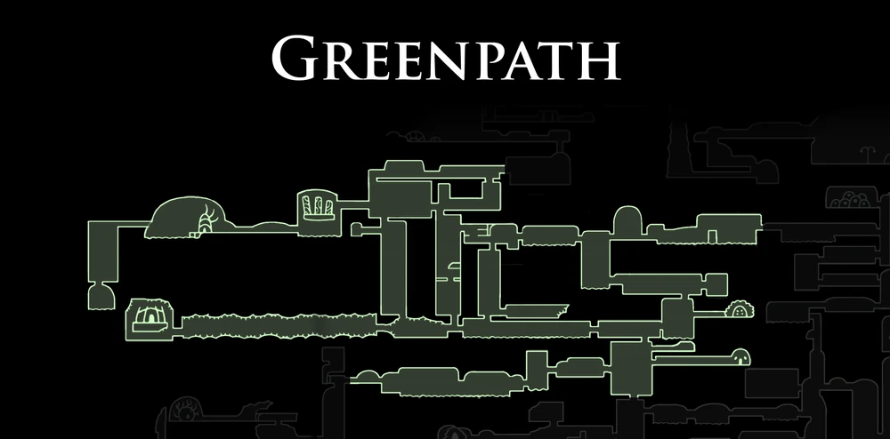

The Hunter
O Caçador é um NPC de missão em Hollow Knight que entrega o Diário do Caçador, um registro com todos os inimigos encontrados em Hallownest

O Caçador é um NPC de missão em Hollow Knight que entrega o Diário do Caçador, um registro com todos os inimigos encontrados em Hallownest